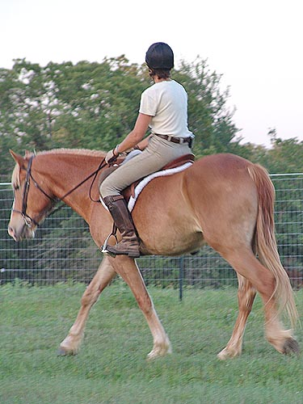

Mo - Training at
the kennels Mo is spending a month out at the kennels.
Chrissie is getting rides in on him and
I'll hop on
him for roading and get some trail rides
in.
We've got a hunt trail ride in June that
I'm aiming for.
Mo doesn't seem to hold muscle easily.
We're going to increase his oil and see if that helps. At least his endurance
out on the trail seems just fine.
He's very obedient on the lunge line.
He's probably around 15.2, but much
lighter bodied than my other draft crosses.
Chrissie's first time up.
He chews on the bit when he's nervous
or bored.
He settled pretty quickly and stopped
chewing.
He's very playful in the pasture and
does a lot of running.

I think with a lot of riding
and time he will get less angular.
It was getting too dark for pictures,
but they did get some trot work in.